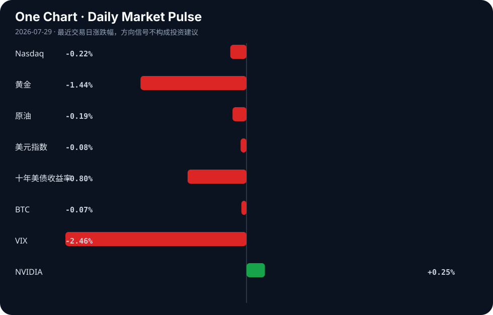

Daily Intelligence
2026-07-29｜Wednesday
Today’s Thesis｜今日一句话
AI的权力集中与治理真空正在同时发生：当科技巨头呼吁去中心化、员工呼吁全球监管时，AI对宏观经济信号的扭曲已让央行陷入盲区，治理速度远落后于技术对经济系统的渗透速度。
① Executive Summary｜30 秒
- AI：AI权力博弈加剧，Zuckerberg抨击AI权力集中[A1]，科技员工呼吁全球监管[A2]，而AI军事化与教育普及正双轨并行[A9][A24]。
- 商业：AI外贸正取代新能源成为中国新增长极[A15]，工业企业利润上半年增长18.7%[B9]，半导体与特种气体驱动投资主线[B11][B23]。
- 宏观：BIS警告AI繁荣模糊央行通胀信号[B6][B10]，俄罗斯设立320万美元门槛规范加密货币交易[B14][B15]，印尼谋求摆脱原材料依赖引发供应链重组[B1]。
② AI Daily
1. AI权力博弈：去中心化呼吁与军事化集权
What Happened Mark Zuckerberg抨击AI权力集中[A1]；科技员工呼吁美国主导的全球AI风险管理[A2]；与此同时，美国与阿联酋建立首个双边军事AI特遣队[A9]。 Why It Matters 商业利益与安全诉求撕裂了AI发展共识。巨头口头呼吁开源与去中心化，实质是为自身生态扩张解绑；而国家机器则在核心安全领域加速AI集权化与军事化，民用与军用的边界正在模糊。 Second-order Effect 监管套利加剧 → 军事AI应用常态化 → 全球军控体系面临AI降维打击的真空。
2. AI的制度化与劳动力技能溢价反转
What Happened 中国教育部发文加强中小学AI教育[A24]；多所大学与学区强制或提供AI工具与证书[A3][A4][A7][A17]；IRS发布税务AI使用指南[A16]。 Why It Matters AI正从“可选技能”变为“底层基础设施”，教育体系与专业规范被迫重构。当AI使用成为合规基线，不掌握AI的传统岗位将面临议价权崩塌。 Second-order Effect 教育强制普及 → 劳动力市场技能溢价反转（传统文职贬值，借AI提效的合同律师议价权上升[A14]） → 机构重组加速（如视听行业重组[A10]）。
3. AI外贸引擎与宏观信号失真
What Happened 中国商务部将AI外贸盖章为新名片，取代新能源成新增长极[A6][A15][A18]；BIS警告AI扭曲央行通胀信号[B6][B10]。 Why It Matters AI硬件与软件出口改变了贸易结构，但AI对价格和就业的冲击使传统宏观指标失真。出口端的繁荣与内需端的通缩并存，央行依据失真信号制定政策的风险剧增。 Second-order Effect 贸易结构升级 → 央行依据失真信号维持高利率 → 宏观调控过紧反噬AI资本开支。
③ Business Daily
科技
半导体成为当前最大投资主题的核心驱动力[B11]，高纯度特种气体市场随之扩张[B23]。然而，算力基础设施正面临地方资源约束，德州已出现反对数据中心宣传的声浪[A20]，科技扩张与地方承载力的冲突显性化。
制造
中国上半年工业企业利润增长18.7%[B9]，官方叙事反驳“产能过剩”论[B19]。金属粉末增材制造市场持续增长[B7]。新兴市场正试图复制这一路径，尼日利亚押注锂矿驱动工业复兴[B20]，沙特扩建PX技术制造设施[B24]，全球制造产能分布处于重构期。
能源
UN SDGs 2026报告显示能源与气候压力加剧[B22]。在此背景下，Suzlon Energy寻求向欧洲、澳洲及东南亚出口风能[B21]，印尼谋求摆脱原材料依赖向工业升级[B1]，传统能源出口国正被迫向绿色产业链上游攀爬。
金融
Brookfield扩张全球另类资产平台[B8]，显示资本在不确定性中向实物资产聚拢。俄罗斯央行发布加密交易草案，设立320万美元资本门槛[B14][B15]，试图在制裁体系下建立合规的加密资本流动通道。
④ Macro Observation｜机制分析
世界正在发生什么？ 经济信号正在被AI繁荣和供应链重组双重扭曲。一边是AI外贸与工业利润的账面繁荣[A15][B9]，另一边是BIS警告的通胀信号失真[B6]；同时，新兴资源国（印尼、尼日利亚）试图从出口原材料转向工业升级[B1][B20]。
为什么发生？ AI带来的生产力跃升和成本下降掩盖了潜在的通缩压力与内需不足；而全球地缘摩擦迫使资源国寻求价值链上移，打破了原有的“资源国-制造国”稳态分工。
资本如何流动？ 资本正从传统长周期大宗原材料加工环节撤出，流向算力基础设施（半导体[B11]、特种气体[B23]）与替代性避险/投机资产（合规化加密货币[B14]、全球另类资产[B8]）。
接下来关注什么？ 关注央行在失真信号下的误判风险（维持高利率过久导致AI资本开支断崖式下跌），以及新兴市场资源民族主义对全球供应链的反噬。
⑤ Signal Dashboard
| 指标 | 最新值 | 今日 | 信号 |
|---|---|---|---|
| Nasdaq | 24,876.91 | ↓ -0.22% | 中性 |
| 黄金 | 4,015.90 | ↓ -1.44% | 避险需求回落 |
| 原油 | 82.45 | ↓ -0.19% | 供需平衡 |
| 美元指数 | 101.39 | ↓ -0.08% | 中性 |
| 十年美债收益率 | 4.60 | ↓ -0.80% | 利好久期资产 |
| BTC | 63,682.68 | ↓ -0.07% | 中性 |
| VIX | 18.21 | ↓ -2.46% | 風险偏好改善 |
| NVIDIA | 197.01 | ↑ +0.25% | 中性 |
⑥ Deep Insight
当前市场叙事存在一个危险的盲区：一边是AI外贸取代新能源成为新增长极[A15]、中国工业企业利润录得18.7%增长[B9]的繁荣图景；另一边是国际清算银行（BIS）严厉警告AI繁荣正在模糊央行通胀信号[B6][B10]。这并非简单的统计噪音，而是经济反馈回路正在被技术结构性扭曲。
非共识视角在于：AI驱动的出口繁荣和利润增长，实质上是在向全球输出通缩压力，而非单纯的竞争力提升。AI提升生产效率（如合同律师借AI提升议价权[A14]），必然压低单位服务与产品价格。当AI产品作为外贸新引擎大量出口[A18]，接收国将面临输入型通缩，而出口国则因AI替代劳动导致内需萎缩，只能依赖外部市场消化产能。这种“效率-通缩”螺旋，使得传统基于价格指数的通胀信号彻底失真。
更深层的机制是，央行依据失真的低通胀信号，可能误判经济潜在增速，从而维持紧缩政策过久（如十年美债收益率仍居4.60%高位）。这将对依赖廉价资本的数据中心和AI基建形成反身性扼杀。德州已出现反对数据中心宣传的声音[A20]，正是资本成本上升与地方资源约束冲突的早期信号。因此，AI外贸的账面繁荣，掩盖了宏观治理失灵与内部需求空心化的脆弱性。一旦外围需求因通缩收缩，AI产能将面临无处消化的危机，官方叙事对“产能过剩”论的反驳[B19]将面临真正的压力测试。
反方观点认为：AI外贸是真实比较优势的跃迁，利润高增证明需求旺盛而非通缩；BIS的担忧是旧宏观框架无法适应新生产力，AI创造的新岗位和新需求将最终对冲价格下降，带来无通胀的繁荣。
证伪条件：若未来两个季度，全球核心CPI持续超预期下行且失业率结构性上升，同时AI资本开支增速因高利率显著下滑，则证明AI通缩效应占据主导，宏观信号确已失真且引发反身性收缩。
⑦ Tomorrow Watch
1. 俄罗斯央行加密货币交易规则（320万美元资本门槛）9月生效的后续细则发布[B15]。
2. 中国教育部中小学AI教育通知的地方执行细则落地情况[A24]。
3. 美阿军事AI特遣队的首次联合演习或指挥架构公布[A9]。
4. BIS关于AI模糊通胀信号的完整季度报告数据发布[B6]。
5. 印尼针对原材料出口禁令及对中国关系影响的官方政策表态[B1]。
⑧ One Chart

图表显示风险偏好（VIX下降）与避险资产（黄金下降）同步回落，而长端利率（十年美债收益率下降）对久期资产形成利好。这种组合反映了市场在软着陆预期下的资产再平衡，而非单一避险或进攻逻辑的主导。
⑨ Quote of the Day
“What gets measured gets managed.”
— Peter Drucker
中文理解：被持续衡量的东西，才会真正进入管理和资源配置。
Why it matters today：这句话不是装饰，而是今天观察 AI、商业和宏观变化时的一个思考框架：先看机制，再看价格；先看约束，再看叙事。
⑩ Action Items｜今天值得思考什么
1. 验证BIS警告的AI对通胀信号的扭曲在CPI细分数据中的具体体现[B6]。
2. 追踪AI外贸替代新能源出口的数据结构变化，区分硬件与软件贡献[A15]。
3. 比较Zuckerberg的去中心化呼吁与美阿军事AI特遣队集中化控制的逻辑冲突[A1][A9]。
4. 关注俄罗斯320万美元加密货币门槛对资本流动的实际拦截率[B15]。
5. 思考工业企业利润高增[B9]与“产能过剩”反驳[B19]之间的产能利用率真实水位。
信息边界
本报告事实来源仅限今日提供的AI及商业/宏观新闻聚合源。市场数据反映最近交易日收盘或实时状况。新闻来源多为二手聚合，重要推断（如AI通缩螺旋、央行误判风险）基于材料事实推演，尚未经官方数据证实，需回到原文验证。
Sources
AI
- A1：Mark Zuckerberg Blasts Centralization of A.I. Power - The New York Times — Google News · AI
- A2：Tech employees call for US-backed global effort to manage risks of advanced AI - Reuters — Google News · AI
- A3：Eastern Enrolling Students for New Artificial Intelligence Certificate Program Beginning This Fall - Parsons Advocate — Google News · AI
- A4：'AI isn't the flavor of the day:' Why Adrian College is requiring students to learn it - WTOL — Google News · AI
- A6：商务部盖章！人工智能外贸新名片背后有何玄机？ - 新浪网 — Google News · AI 中文
- A7：Parental choice provided for artificial intelligence tools in schools - AOL.com — Google News · AI
- A9：United States , UAE Establish First Bilateral Military Artificial Intelligence Task Force in the Middle East - Yemen Online — Google News · AI
- A10：The Future of Audiovisual Is Reorganization - Roastbrief US — Google News · AI
- A14：AI may be a boon for contract attorneys, new study shows - ABA Journal — Google News · AI
- A15：人工智能外贸为何能取代新能源成新增长极？ - 新浪网 — Google News · AI 中文
- A16：IRS Office of Professional Responsibility Issues Introductory Guidelines on Artificial Intelligence Use in Federal Tax Practice - Buchanan Ingersoll & Rooney PC — Google News · AI
- A17：District #348 Preparing Local AI Guidelines Following State Guidance - WSJD 100.5 — Google News · AI
- A18：人工智能相关产品为何能成为外贸新引擎？ - 新浪网 — Google News · AI 中文
- A20：Lucci: Texans Cannot Fall Victim to Data Center Propaganda - Texas Scorecard — Google News · AI
- A24：Notice of the Office of the Ministry of Education on Strengthening Artificial Intelligence Education in Primary and Secondary Schools - CSET | Center for Security and Emerging Technology — Google News · AI
Business & Macro
- B1：Indonesia wants to move beyond raw materials. Will its China ties suffer? - South China Morning Post — Google News · Global Economy
- B6：AI Blurs Economic Signals for Central Banks: BIS Bulletin Highlights Policy Challenges - News and Statistics - IndexBox — Google News · Markets Policy
- B7：Metal Powders for Additive Manufacturing Market to Reach USD 3.9 - openPR.com — Google News · Technology Business
- B8：Brookfield Asset Management (TSX:BAM) Expands Global Alternative Asset Platform - Kalkine Media — Google News · Global Economy
- B9：上半年工业企业利润增长18.7% - 新浪财经 — Google News · 行业
- B10：BIS Warns AI Boom May Obscure Central Banks' Inflation Signals - Global Banking & Finance Review — Google News · Markets Policy
- B11：Why semiconductors are powering today’s biggest investment themes - inkl — Google News · Global Economy
- B14：Russia Central Bank Publishes Draft Rules for Crypto Trading and Custody - MoneyCheck — Google News · Markets Policy
- B15：Russia Crypto Rules: $3.2M Capital Floor, Sept Launch - FinanceFeeds — Google News · Markets Policy
- B19：'Excess capacity' claims rejected - China Daily — Google News · Global Economy
- B20：Nasarawa bets on lithium to drive an industrial revival - Business News Nigeria — Google News · Global Economy
- B21：Suzlon Energy eyes Europe, Australia and Southeast Asia for exports - Business Standard — Google News · Technology Business
- B22：The UN SDGs Report 2026: Energy and Climate Pressure Mount - Energy Digital — Google News · Technology Business
- B23：High-Purity Specialty Gases Market Size, Share & Forecast, 2035 - Global Market Insights Inc. — Google News · Technology Business
- B24：Energy Recovery Leases Saudi Manufacturing Facility to Expand PX Technology Production - citybiz — Google News · Technology Business